사진과 이야기가 이어지는 구성
두 차례 화면 검토로 작성 화면의 행동 가림, 쪽지 읽기 중 시선 분산, 긴 글의 닫기 접근을 수정했습니다. 아래는 실제 브라우저에서 캡처한 HTML 레퍼런스입니다. Android 앱의 최종 화면이나 사용자의 디자인 승인을 뜻하지 않습니다.
직접 조작하는 여섯 화면 · 설계·레퍼런스 비교·개발 인계 · 실행 검사 기록
열어볼 이유 → 장소의 이야기 → 그곳에 남은 글
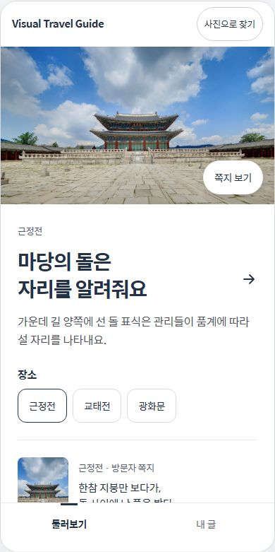
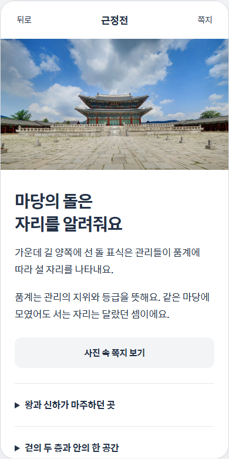
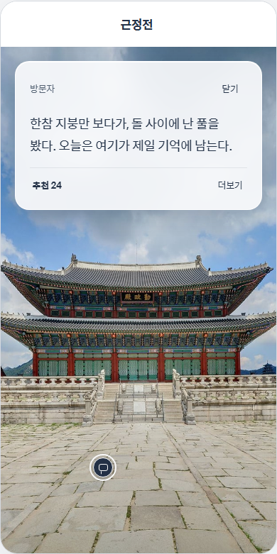
첫 번째 화면 검토 — 과업과 시선
기능 확인용 기존 상세는 사용자가 제공했던 Android 화면을 기준으로 다시 확인했습니다. 설명 세 덩어리의 연속 표시에서 선택한 이야기 중심의 구성으로 바꿨습니다. 과거 제공 캡처와 HTML은 환경이 다르므로 같은 조건의 사용자 비교 결과는 아닙니다.

초기 캡처에서 작성 버튼이 화면 아래로 밀렸고, 입력칸의 기본 높이가 컸습니다. 쪽지를 읽는 동안 다른 표식과 글쓰기 행동도 남아 있었습니다. 작성 사진을 줄이고 완료 행을 분리했으며, 쪽지에는 선택한 위치만 남겼습니다.
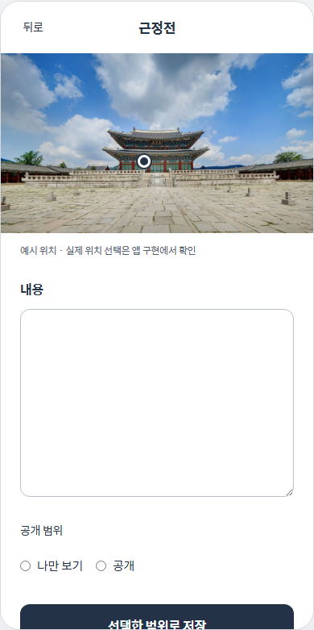
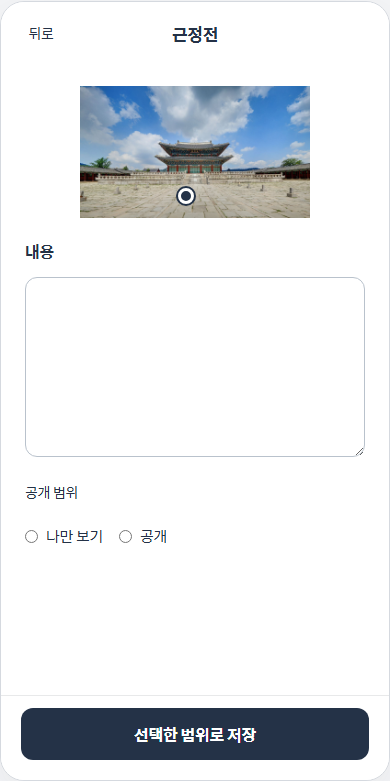
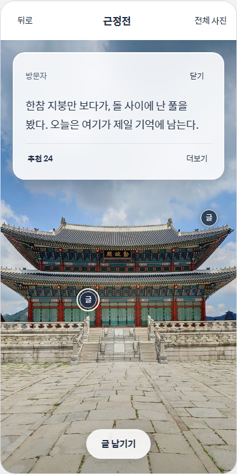
두 번째 화면 검토 — 큰 글자와 실패
200% 글자·긴 쪽지에서는 본문만 스크롤하도록 분리해 닫기·추천을 유지했습니다. 사진 열기에 실패해도 이전 사진이 남고, 작성 후 문서의 다른 화면으로 이동해도 입력은 유지됩니다. 브라우저를 닫으면 사라지는 예시이며 실제 기기 저장·공개는 아닙니다.
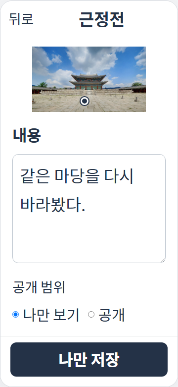
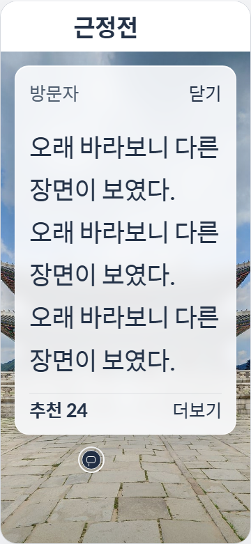
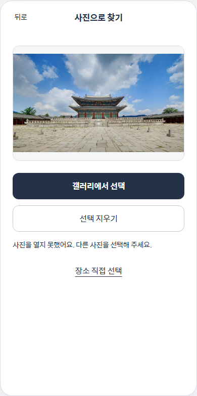
각 단계의 판정
| 단계 | 확인된 상태 | 제품에서 남은 확인 |
|---|---|---|
| 01 홈 | 이야기·사진 입력·직접 선택의 입구가 보임. 3개 너비에서 가로 넘침 없음 | 조작 설명 없이 첫 행동을 찾는지, 대표 이야기가 관심을 만드는지 |
| 02 이야기 | 사진·본문·다음 이야기의 위계와 접힘 표현 확인 | native 스크롤 복원·실외 가독성·내용 만족 |
| 03 쪽지 | 배경 행동 숨김, 닫기/Escape·포커스 복귀, 사진/좌표 정합 확인 | Android 굴절/blur 비용·TalkBack·밀집 표식·자유 확대 |
| 04 작성 | 완료 버튼 가림 수정, 문서 내 글 보존 확인 | 실제 키보드·앱 종료 복원·공개 선택 이해 |
| 05 사진 | 미리보기·오류 후 이전 사진 유지·선택 지우기 확인 | 촬영·권한·실제 모델과 오류 연결 |
| 06 내 글 | 빈 상태와 문서 내 저장 예시·이어서 쓰기 확인 | 기기 저장·서버 공개 상태와의 연결 |
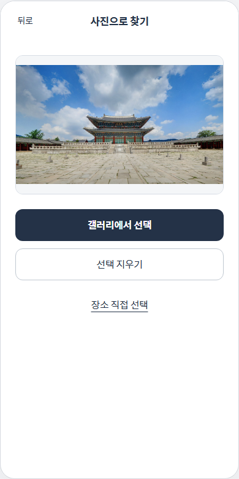
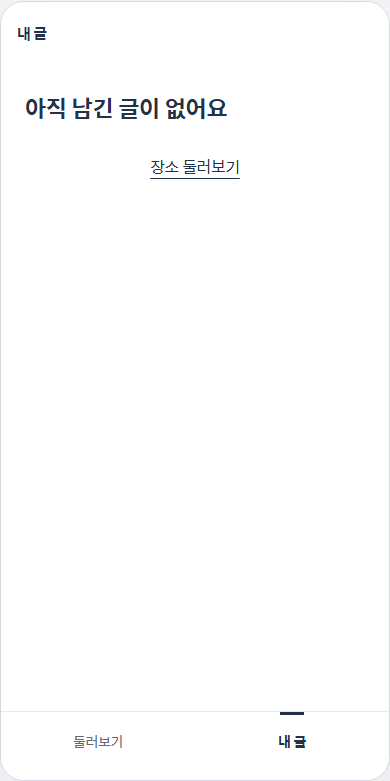
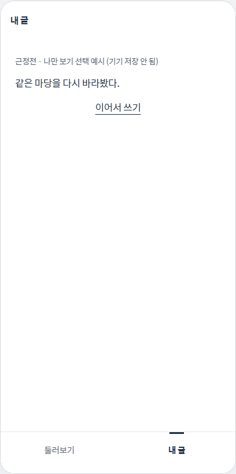
유명 앱보다 더 좋은가?
전체 품질에서 더 좋다는 결론은 내릴 수 없습니다. 공개 자료와 우리 시안을 비교한 설계 판단이며 동일 과업의 경쟁 앱 사용자 실험은 아닙니다. 이 구성에서 집중할 강점은 ‘사진 → 이야기 → 같은 장소의 쪽지 → 원래 자리’의 연결입니다. 실제로 더 보고 싶어지는지는 사람 관찰이 필요합니다.
- Airbnb: 사진에서 콘텐츠를 선택하는 위계를 참고했습니다. 우리 홈은 카테고리 폭보다 한 장소의 깊이에 집중합니다. 다양성·개인화는 비교 우위를 주장하지 않습니다.
- Apple: 사진 위 조작층과 가독성을 참고했습니다. 현재 HTML은 CSS blur와 tint이며 Apple의 광학 재질·native 반응과 동등하지 않습니다.
- 당근 SEED: 맥락 유지·닫기·본문·행동 분리를 적용했습니다. 기능별 기본 품질을 갖추는 기준이며 독창성의 근거로 삼지 않습니다.
사진: 국가유산청 궁능유적본부, 공공누리 제1유형. 출처·이용조건. 쪽지·추천수는 디자인 fixture. 최종 UI 적용과 사용자 선택은 #36에서 관리합니다.